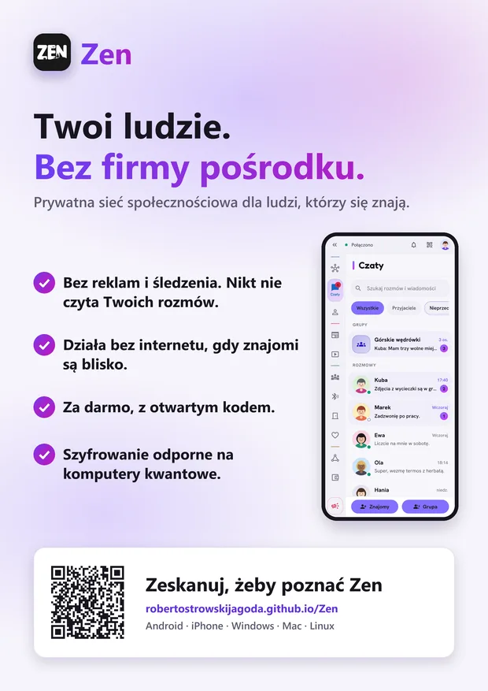
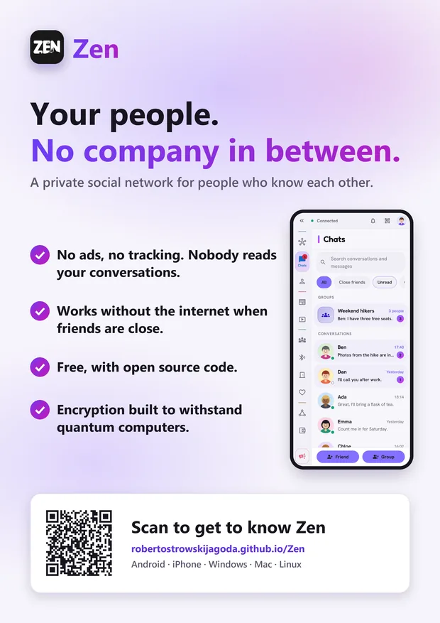
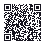

Poster
A4, and it prints just as well on A3. The QR code leads to the about page. PNG at 300 dpi, or PDF for printing.




Short film
A short film about Zen. It starts only when you press play; download it to share it anywhere.
A QR code to this site
It leads to the about page. Put it on a poster, a flyer or a slide. The PDF is an A4 page with a square to cut out: the QR code, a short line asking to scan it and a small Zen signature.



Your own sticker from the app
In Zen, the About screen makes a promo sticker for you: a QR code that leads either to this site or straight to your own invitation, so whoever scans it can add you as a friend at once. Print it and put it where people you know will see it.